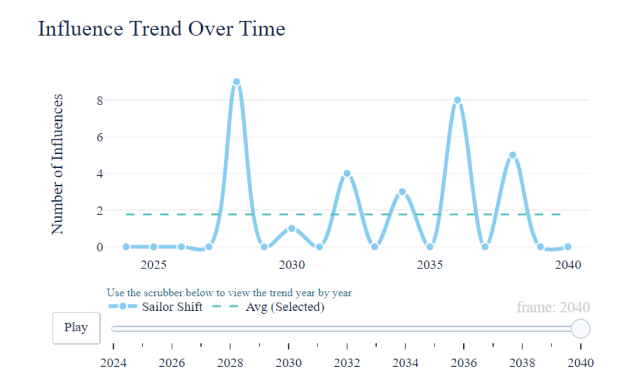
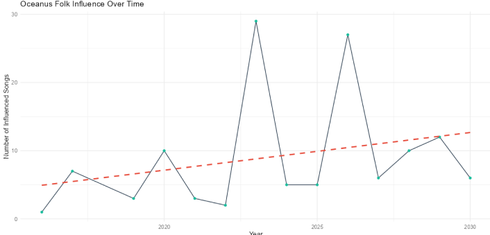
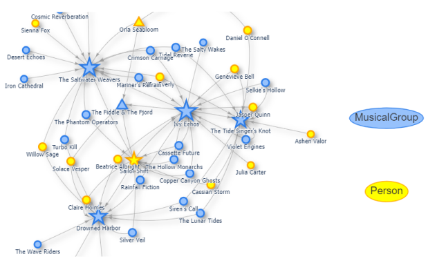
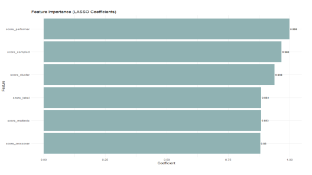
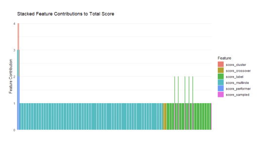

📈 Findings and Analysis
1 Exploratory Data Analysis
1.1 🎯 Influence Trend
- Peak influence year: 2028, with 9 connections.
- Other spikes observed in 2031, 2034, 2036, and 2038.
- Suggests cycles of renewed cultural relevance or stylistic resurgence.

1.2 🎯 Statistical Regression
- Fitted trendline: +0.55 songs/year.
- However, regression not statistically significant (p = 0.329).
- R² value (~7.9%) indicates only a small share of variance is explained by time alone.

2 Network Analysis
- Network Centrality:
Sailor Shift is a high-degree central node, both influencing and being influenced. - Subgraph Neighbors:
Key collaborators include:- Beatrice Albright
- Rainfall Fiction
- The Saltwater Weavers
These connections reinforce Sailor Shift’s role as a stylistic bridge within the genre.

3 Predictive Modeling: Rising Stars
Step 1: Feature Design
Defined 6 forward-looking traits (e.g. performer role with recent notable songs, tightly clustered notable releases, multirole, artist’s recent songs have influence edges to other genres, having a label, recently sampled or referenced by others).
Step 2: Scoring Artists
Applied scoring logic to assign score values per artist.Step 3: Total Score Creation
Summed the 6 features to create a total_score as the target outcome.Step 4: LASSO Modeling
Used LASSO regression to select the most predictive features.Step 5: Refit Final Model
Trained a simple linear model using only the selected features.Step 6: Predict & Rank
Generated predictions and identified top potential rising stars.
3.1 🧠 Feature Impact (Post-LASSO)
Top predictive traits: - score_performer - score_sampled - score_multirole
3.2 🔢 Top Predicted Rising Stars
| Artist | Total Score | Key Traits |
|---|---|---|
| Beatrice Albright | 4 | Performer, Cluster, Multirole |
| Daniel O’Connell | 3 | Performer, Cluster, Multirole |
| Copper Canyon Ghosts | 3 | Performer, Cluster |
Traits like versatility and being sampled by others stand out as signals of rising potential.

4 Conclusion
The combination of influence trends, graph centrality, and predictive scoring reveals the evolving dynamics of Oceanus Folk. Sailor Shift’s role in the genre is both foundational and forward-looking, mentoring a new generation of breakout artists.